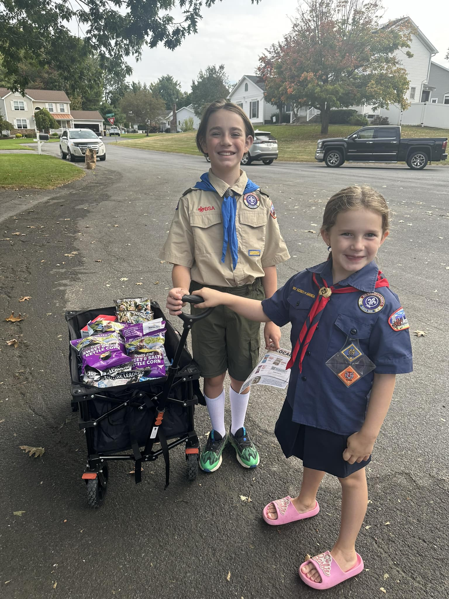

Pre-K Expansion, Woestina Reopened
Added three full classes of Pre-K and reopened Woestina Elementary.
Reelection 2026
for the Schalmont Board of Education
Schalmont Central School District · on the ballot as William Mau
Vote Tue, May 19Three years ago I started showing up to Schalmont board meetings because my daughter's kindergarten class was too big. I wasn't planning to run for anything. I just wanted to understand the problem and see if it could be fixed. It could. We got an additional section added the next school year.
That experience showed me what's possible when someone pays attention, asks questions, and follows through. So I ran for the board, and I've spent the last two years doing exactly that.
I've lived in this community my entire life. This is my neighborhood, and the work on this board matters to me personally.
My wife is a third grade teacher, and together we are raising two Schalmont students: a 7th-grader and a 3rd-grader. I went to the College of Saint Rose for Social Studies 7-12 and taught for three years before moving into operations and data. Today I run operations at TalentSmart, an emotional intelligence and leadership development company. Nights and weekends I chair the Scout Troop at Jefferson Elementary.
What we've accomplished in two years on the board.
Added three full classes of Pre-K and reopened Woestina Elementary.
Added RTT at the high school, growing career pathways with local employers.
Expanded AP and college-credit offerings so students have multiple pathways to earn credit.
Budget passed at 75% voter approval with every dollar going into programs.
Established a Capital Reserve Fund to invest in buildings without raising taxes.
Held low class sizes while other districts cut.
This is a tough budget year across the Capital Region. Health insurance costs are up double digits. Most districts are raising taxes to their cap just to hold steady. Some are cutting staff and programs. At Schalmont, we came in at 1.95%, well under our 4.2% cap, with no cuts to staff, no cuts to programs, and lower transportation costs. That takes planning.
"Coming in at 1.95%, well below the 4.2% allowable cap, keeps Schalmont financially strong and continues all opportunities for our students."
Dr. Thomas Reardon, Superintendent
Four things I want to work on if I'm reelected.
Around Town
Most weekends I'm somewhere with my kids, the Scouts, or at a school event. That's where this campaign starts and ends.

Schalmont Central School District Election
Schalmont High School
1 Sabre Drive, Rotterdam, NY 12303
William Mau on the ballot
Bring a neighbor. Local elections come down to who shows up. Tell three people.